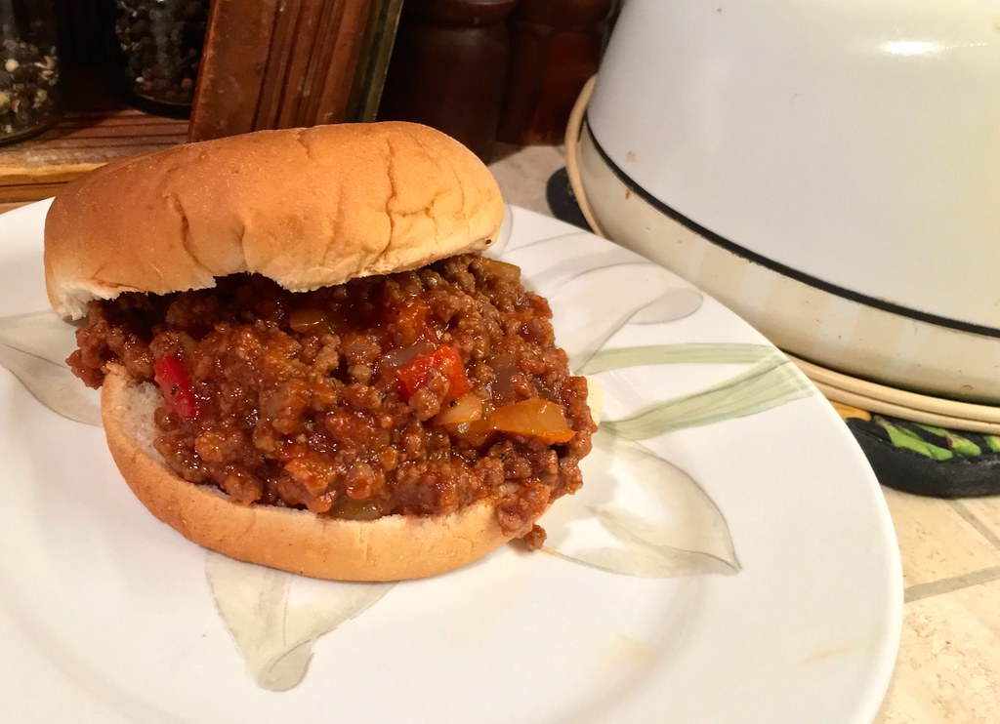

Sloppy Joes

What the heck is a Sloppy Joe?
A Sloppy Joe is a sandwich consisting of ground beef and onions in a tomato-based sauce served on a hamburger bun.
Ingredients
- 1 pound lean ground beef
- 1/4 cup chopped onion
- 1/4 cup chopped green bell pepper
- 3/4 cup ketchup (I should try with BBQ sauce instead)
- 1 tablespoon brown sugar
- 1 teaspoon yellow mustard
- 1/2 teaspoon garlic powder
- salt and ground black pepper to taste
- hamburger buns
Steps
- Heat a large skillet over medium heat. Cook and stir lean ground beef in the hot skillet until some of the fat starts to render, 3 to 4 minutes. Add onion and bell pepper; continue to cook until vegetables have softened and beef is cooked through, 3 to 5 more minutes
- Stir in ketchup, brown sugar, mustard, and garlic powder; season with salt and pepper. Reduce heat to low and simmer for 20 to 30 minutes.
- Divide meat mixture evenly among hamburger buns.
Source